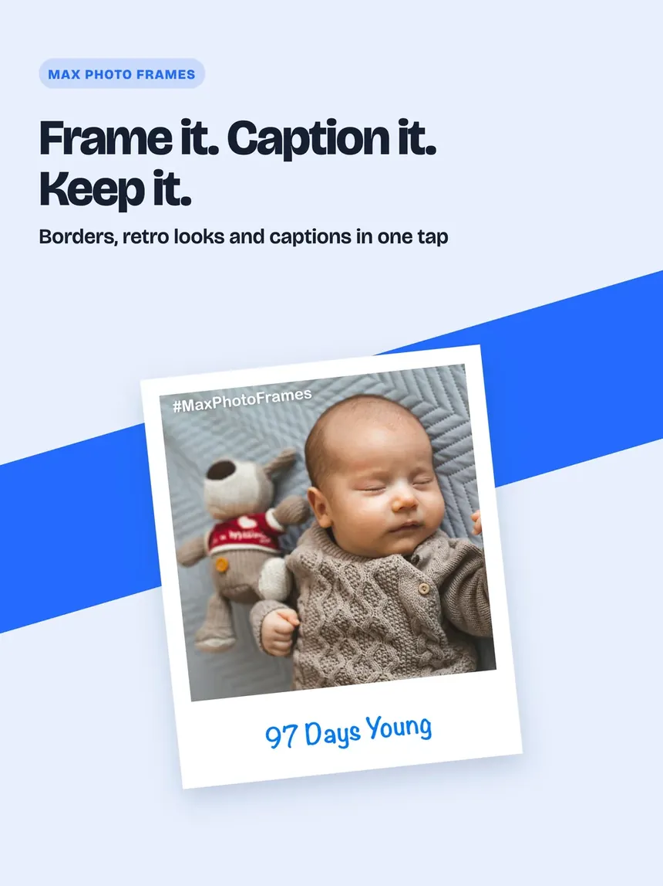

A-Insurance
An insurance journey from quote to renewal, with staff tools and an audit trail. Twenty user stories and 97 automated tests, built with Kiro AI in under two days once the requirements were written.
I turn complicated problems into clear requirements, better processes and solutions that work. I use AI where it adds value, to prototype, test and deliver faster, while the thinking and the decisions stay mine. By day I am a Senior Business Analyst; Max34Lab is where I build things that help people and give back, with the evidence behind each one.
Each one shows the whole job: the problem, the requirements, the design, the build, and the testing that proves it works.
An insurance journey from quote to renewal, with staff tools and an audit trail. Twenty user stories and 97 automated tests, built with Kiro AI in under two days once the requirements were written.

A free photo editor for frames, captions, print sizes and on-device AI. Taken from idea to version 3.3, with every requirement, test and release on record.
Clarify the problem, the users and the process today. Measure the real product before deciding anything.
Write requirements, stories and acceptance criteria clear enough for a developer and a tester to work from.
Prototype and build, using AI where it speeds the work up, and review every change against the requirement it serves.
Automated tests gate every change. Real screens and a release checklist come before anything ships.